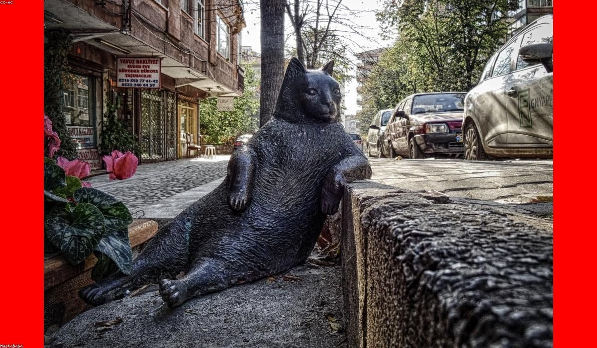

En bref
Biocoop l'emporte pour une commande à retirer ou à recevoir vite, avec un drive en magasin sous deux heures et un panier à 63 € livré. Greenweez gagne sur la largeur de gamme, 12 000 références, et sur la livraison offerte dès 49 €. Note globale, 8,0 contre 7,8.
- Panier de 20 produits livré, 63 € chez Biocoop et 66 € chez Greenweez
- Délai moyen relevé, 2 heures en drive Biocoop, 3 jours ouvrés chez Greenweez
- Livraison offerte dès 60 € chez Biocoop en ville, dès 49 € chez Greenweez
- Avis Trustpilot sur douze mois, 4,3/5 pour Biocoop, 4,1/5 pour Greenweez
Sommaire de ce comparatif
Le verdict en un tableau
Les deux sites ont reçu la même commande à trois dates. Nous avons relevé le prix livré, le délai réel et l'état du colis.
| Site | Note /10 | Panier livré | Délai | Livraison offerte | Le point fort |
|---|---|---|---|---|---|
| BiocoopNotre choix | 8,0 | 63 € | 2 h en drive | dès 60 € | Le retrait rapide |
| Greenweez | 7,8 | 66 € | 3 jours | dès 49 € | La gamme |
| Carrefour | 7,1 | 58 € | le jour même | dès 100 € | La vitesse |
| E.Leclerc | 6,8 | 55 € | drive 4 h | gratuit en drive | Le prix |
| La Vie Claire | 6,4 | 67 € | 4 jours | dès 79 € | La simplicité |
| Naturalia | 6,1 | 72 € | 2 jours | dès 80 € | La cosmétique |
Panier de 20 produits commandé trois fois en septembre 2026, région parisienne.
01

Le retrait le plus rapideDrive sous 2 heures8,0/1002La gamme la plus large12 000 références7,8/10
03Le plus rapide livréCréneaux le jour même7,1/10
Prix du panier livré
Sur les produits, Greenweez est légèrement moins cher. Les frais de port renversent le classement sous 60 € d'achat.

- Biocoop, 63 € livré, 61 € en retrait
- Greenweez, 66 € livré, livraison offerte dès 49 €
Délais et fiabilité
Biocoop s'appuie sur ses magasins, Greenweez sur un entrepôt. Le premier gagne sur le délai, le second sur la régularité des stocks.
Deux heures contre trois jours. Pour les produits frais, la question est vite réglée.
Pour qui Biocoop, pour qui Greenweez
Si vous voulez du frais rapidement
Biocoop, en drive ou en livraison depuis le magasin.
Si vous faites un gros plein d'épicerie
Greenweez, pour la gamme et la livraison offerte dès 49 €.
Si vous n'avez pas de Biocoop à proximité
Greenweez livre partout en France sous trois jours.
Notre verdict
Biocoop l'emporte à 8,0 contre 7,8 sur le délai et le prix livré d'un panier courant.
Greenweez reste le bon choix pour un plein d'épicerie ou hors des villes équipées d'un magasin.
Questions fréquentes
Biocoop ou Greenweez, lequel est le moins cher ?
Sur un panier de 20 produits livré, Biocoop revient à 63 € et Greenweez à 66 €. Sur les produits seuls, Greenweez est moins cher de 2 €.
Quel site livre le plus vite ?
Biocoop en drive, sous deux heures. Greenweez livre en trois jours ouvrés en moyenne.
Greenweez livre-t-il gratuitement ?
Oui dès 49 € d'achat, contre 60 € chez Biocoop en ville.
Peut-on retirer sa commande en magasin ?
Chez Biocoop oui, gratuitement dans la plupart des magasins. Greenweez n'a pas de point de retrait propre.
Quel site a le plus de choix ?
Greenweez avec 12 000 références, contre environ 6 000 en drive Biocoop.
Notre méthode
Ce comparatif repose sur des données publiques, vérifiables une par une.
- Les prix sont relevés en rayon et sur les sites des enseignes, hors promotion, sur un panier identique
- La largeur de gamme est comptée sur les rayons frais, vrac et épicerie à partir des catalogues en ligne
- Les avis clients proviennent de Google Maps et de Trustpilot, sur les douze derniers mois
- Les engagements (vrac, local, commerce équitable) sont ceux publiés par chaque enseigne
- Les relevés sont datés et refaits chaque trimestre